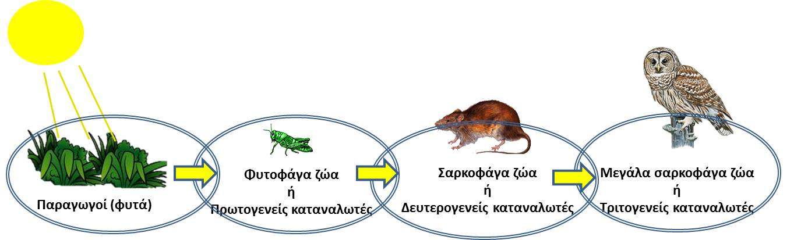
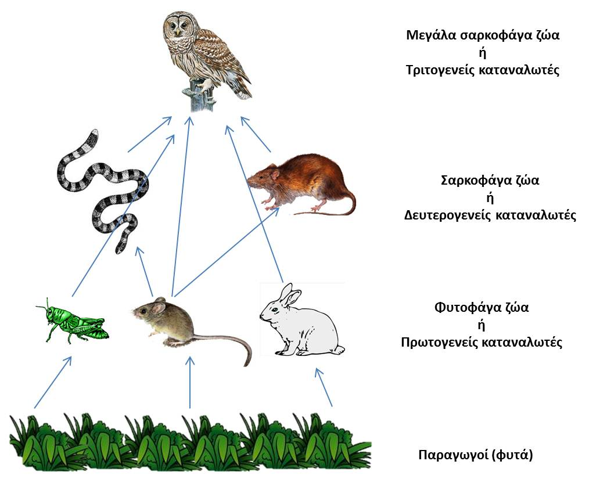

Δεδομένου ότι οι οργανισμοί εξαρτώνται από άλλους οργανισμούς για την τροφή τους, μπορούμε να κατασκευάσουμε «τροφικές αλυσίδες», ακολουθώντας τις διατροφικές συνήθειες των διαφόρων οργανισμών. Κάθε τροφική αλυσίδα έχει πάντοτε στο σημείο εκκίνησης ένα είδος φυτού. Ωστόσο, τα περισσότερα είδη δεν τρέφονται με μια συγκεκριμένη πηγή τροφής, αλλά παρουσιάζουν διατροφικές συνήθειες οι οποίες περιλαμβάνουν ένα εύρος από πηγές τροφής. Περαιτέρω, οι πηγές τροφής μπορεί να ποικίλλουν ανάλογα με την εποχή. Για να περιγραφεί αυτή η ποικιλία οι επιστήμονες χρησιμοποιούν τον όρο «τροφικά πλέγματα», ο οποίος περιλαμβάνει τα σύνολα διασυνδεδεμένων τροφικών αλυσίδων.
 Τροφική αλυσίδα

Τροφικό πλέγμα